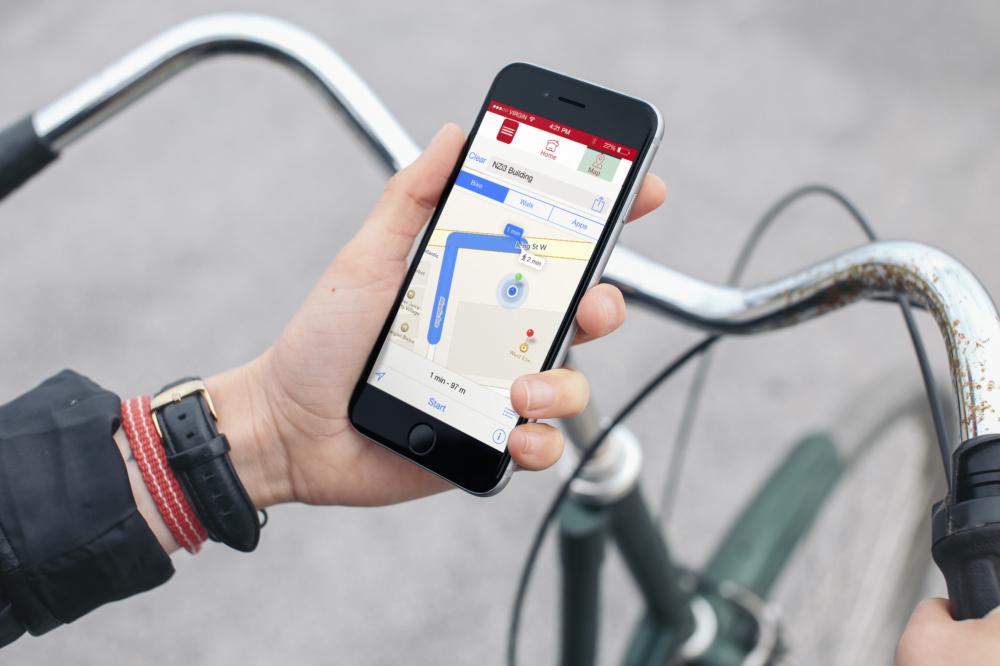
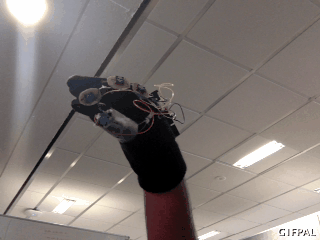
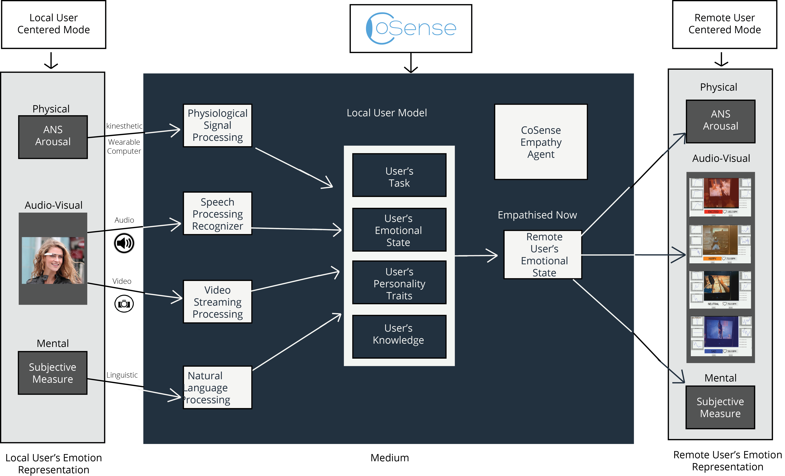
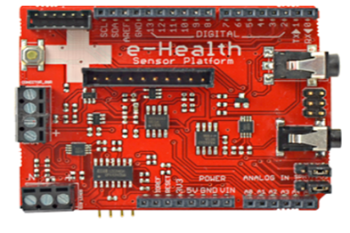
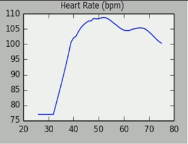
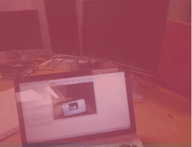
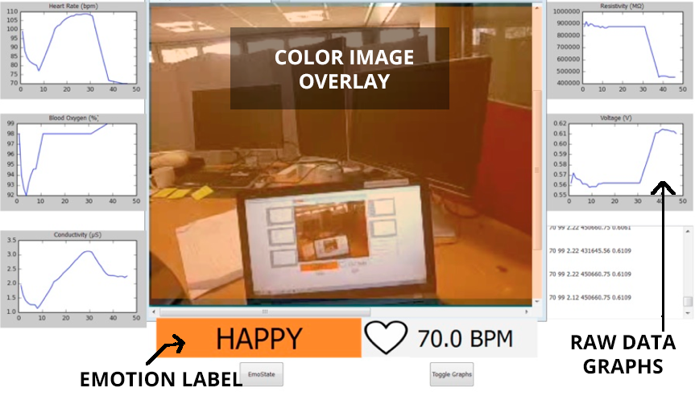
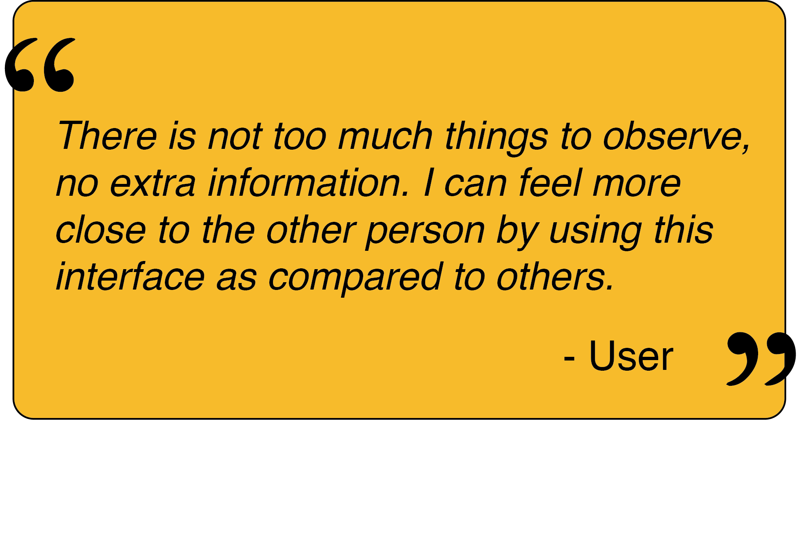
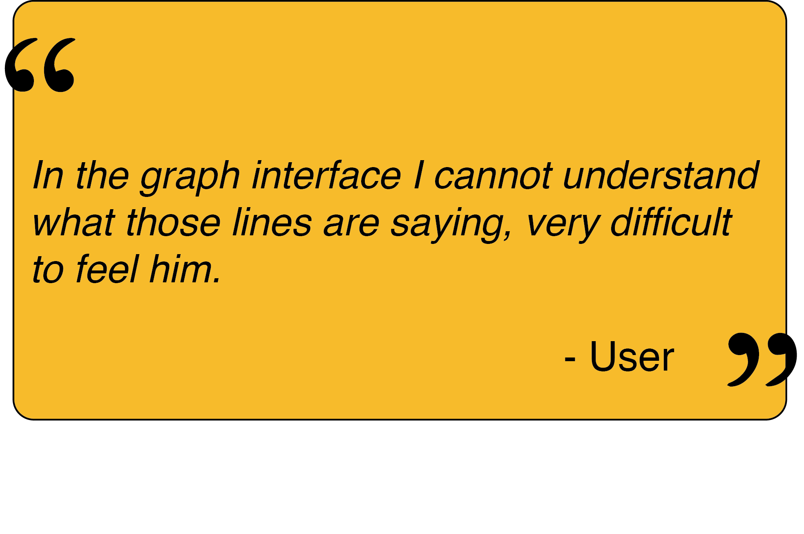

Ix Designer - UX Researcher26 - Tinkerer - Prototype Designeer - Jack of all, Master of some - Music and Photography Lover
Currently, I am looking for opportunity to work in the field of Human Computer Interaction (HCI) as Interaction Designer or User-Experience Designer / Researcher.
I have recently submitted my Masters Thesis (results are awaited) as a part of my Masters degree in Human Interface Technology from Human Interface Technology Lab, New Zealand (HITLab NZ) at University of Canterbury, New Zealand.
Emotions have a very important role in influencing everyday human activities that involve experience, social communication, learning and decision-making. My masters thesis was focusing on “Wearable Devices for Affective Remote Collaboration” under the supervision of Dr. Christoph Bartneck , Prof. Mark Billinghurst and Dr. Gun Lee .
Before that I was working on intelligent wearable Shoes/insoles that helps visually challenged to navigate from one place to other. I have also worked on innovative medical embedded devices which helped diabetics to track their glucose readings.
During under-graduation, I was an active member of LUGB (Linux User Group Bikaner) and organized many FOSS events in Techfests, Software freedom day, lots of Linux installfests, workshops related to "Arduino for beginners", "Basic tutorial of Linux" etc.
This project is an interface solution for the employees working in a large warehouse where they face difficulty in finding the right package. After brainstorming sessions and interviewing few employees of a warehouse, I came up with an Augmented Reality based marker system for identifying the correct box after user specifies the category of item, he is looking for.
Starting with paper prototyping for the idea of an AR interface and then making it dynamic with POP (low resolution)
Check the Working Paper Prototype in POP application here .
I designed 3D rendered box using software Blender, But later on, I figured out it is easy and rapid to prototype the idea using Processing. So, PROCESSING was used to create a 3D simulation of a warehouse.
One of the limitation with this system was that, there was no indication of direction where the box was, only marker for the destination was provided which made this system bit complicated.
To know more about this project, you can check its GitHub Repo.
World Tour App
Its a World Tour Guide prototyped in UXPin as a part of the assignment for the course.
Task was to propose a new mobile application that will help people to find tourist attractions in the city.
To Start with, I interviewed some international students and asked them about the things that they are looking for in a mobile application which will guide them about the tourist places in Christchurch. Some of the ideas that I got from their responses were
City Map with search filters
Search options for attractions, restaurant, hotels, places for shopping and few more.
Then based on that, I sketched some basic application layout and screen ideas which were connected together using POP application.
Screen View in Paper Prototypes
Paper Prototype for the App
Check the Working Paper Prototype in POP application here .
After little bit of user testing with the low-fidelity prototype (POP App), I iterated the app and made some real look a like screens using photoshop which were then put together using UXPin.
IMU Galaxian
IMU Galaxian is a computer game designed using processing,
similar to 8-bit video game “Galaxian” we used to play in our childhood.
I gave it a little star wars effect by making player's ship as star war's ship and
similar laser shooting sound.
A wrist tied device like wrist watch,
constituting IMU sensors over arduino board, was made, used as remote control.
Gestures made by hands were used to control player's ship and shoot accordingly,
whereas enemy ships were coming on random basis.
It was a simple game, created just for fun during Tinker time provided while working in Ducere Technologies Pvt Ltd.
Le Chal
Le Chal Idea concept
Technical concept
Basic Idea of Le Chal was given by Anirudh Sharma which was to provide
a way to Visually Impaired that helps them to navigate from one location to another for which at present they have to depend on others. In this process of finding a
solution, he came up with an innovative idea of intelligent and smart shoes that helps them to do the same and uses haptic vibrational feedback mechanism to apprise them as they come
close to the turn while heading towards their destinations.
This idea got awarded " innovative idea of the year 2012 " by TR35 from MIT , gained lots of appreciations and media attention .
To prove his concept, he created rough mock ups of it.
After Anirudh and Krispian founded Ducere Technologies Pvt. Ltd . I was the 1st employee of the company they hired.
I started working on this Idea, we used to brainstorm on this idea, enhance its functionality, to come up with better designs since it has to be an unobtrusive product.
I made the 1st prototype by cutting shoes, making a circuit using arduino board and sensors then by programming it to make it work after reading lots of research papers, brainstorming sessions and discussions. It worked and we tested it on some visually challenged patients in the L V Prasad Eye Hostpital, Hyderabad where we asked them about their reviews regarding whole idea, comfortability and what can be modified in it, they felt after wearing those shoes. Then accordingly we altered the design and modified its features and then helped to get it into product form. Simultaneously I worked on the other applications, one can use these shoes for.
Le Chal got showcased in TED on Feb 25th, 2013 at Long Beach, CA.
Diabeto
Diabeto is a smart unobtrusive Bluetooth powered Device which helps Diabetic patients to track their glucose readings by transfering them to your android devices.
Since Glucometer doesn't have a capability to store large logs of glucose readings, this device helps to save them from writing it down at regular intervals or if unfortunately the misplaces the readings.
It has an amazing option of emailing those readings direct to thier concerned doctor.
I helped in creating 1st working prototype which on iteration is in final product phase. We worked with designers to get it in attractive, unobtrusive form.
Side by side was trying my hands on T-Board another product by Farasbee the startup I used to worked in.
Sphero
Its an idea, we brainstromed, prototyped and developed in MIT Media Lab's Design Innovation Workshop 2012, India.
Basic idea is related to create a virtual sphere (aura) around a user by a medium of android powered devices which he always keep with him. This sphere will track the objects that user will classify as important and should be taken with him while going anywhere or doing any thing. A use case that we refered was, consider a student getting ready for his mathematics exam. Then he can make a mode in his android phone's application named as “Exam time” and can tag the stuff that he has to carry with him to examination center e.g. Hall-Ticket, geometry box, calculator etc. Now when he leaves for center, in case he forgets anything to carry, application will start to buzz when that object goes beyond his sphere (range). Similarly it will apprise user in case somebody steals some important tagged thing like wallet etc very soon as compared to other device or application. We planned to integrate our application with social networking accounts and record things users share with their friends in real world automatically.
This idea can be extended to enormous real life applications e.g. reminding user to take particular medicines at particular time etc.
Since it was a workshop of only 5 days which were not enough to complete this project but I created a crude prototype which was buzzing when a RF tag which we used as transmitter goes out of a particular range from reciever which was made by using arduino and RF reviever.
An embedded device can be hanged on doors or somewhere user want. Idea to make sticky-tweet was as a replacement of sticky notes people post while going somewhere,
e.g. In normal cases , if a person has to go somewhere out, he normally leaves a message by pasting a sticky note at his door saying “ I am going to market, 'll be back by 7 pm – Kunal”.
But what if he forgets to write or note is been misplaced. So this idea is about an easy solution one can think of. Assuming that these normally everyone uses twitter.
So if user tweets about his going out status, saying “ I am going to market to purchase a new i-pod, 'll be back till 7 pm #excited “.
Now the idea of Sticky-tweet is to hang it on door, and any guest came to see you in your absence , when he knocks the door, this device will automatically be activated by that knock,
and starts fetching your latest tweets and search for a particular hashtag e.g. #sticknote or what ever you have setted as your hashtag for device.
Once its done searching and it will post that tweet by itself on its display.
I developed a crude working prototype using arduino, ethernet shield, some sensors and display. Since I had around 15 days to create it, so I finished its hardware part and basic software part in which it was fetching and displaying text from a local server which was storing data in its database as XML format.
gestoPaint
Gesto-Paint as name explains, Painting using hand gestures. I got inspiration to do this project after watching Pranav Mistry's TED Talk on “Sixth-Sense”.
Putting a colored cap on fingers, doing gestures, computer recognizing and acting accordingly seemed super cool. After being fascinated by movie “Minority Report” and then Sixth Sense,
I thought of this idea just to kickstart my passion of computer vision and HCI.
Idea was “ While Talking about Interaction with Computer, we need to talk in its language i.e machine language.
Now the question arises why do we need to learn computer's language when we are using it for our ease. As all know, Gestures are the best part in expressing one.
Then We can use our hand gestures to make computer work accordingly. So gesto-Paint is a hand gesture based project that enhance user interaction with computer.
I used OpenCV to recognize Red Colored marker and pymouse to control cursor, though I didn't created a paint application but my prototype's working was showing that it will paint too.
Later on, I tried this same project with OpenFramework too.
To know more about this project, you can check its GitHub Repo.
UC Campus Application
Due to a severe earthquake in Christchurch in 2011, the University of Canterbury (UC) is going through heavy post-earthquake remediation. UC administration was a bit stressed in managing regular classes and the construction work as they have to keep the health and safety of students as a priority.
After few early meeting, UC asked HITLab to design a smartphone application that provide information of the current/future work along with the general information of their course curriculum and university.
Our main objective was to investigate and design the app to improve the experience of the staff, students, guests and the construction workers on the campus.
This was a part of a group project in which my group was responsible to conduct research, design and prototype an application that can give an insight to the developers about the user interface and user interaction with the application.
User-Centered Design Process:
We started with the initial requirement analysis, then personas and storyboarding was done in order to understand the user and design user-centered interfaces.
We also performed a comparison analysis of the existing smartphone applications of well-recognized Universities from all over the world.
We made a workflow diagram of the application and then paper prototyped the app.
Lo-fidelity prototyping involving paper prototyping, wire-framing, mockups followed by hi-fidelity prototyping was done in which we created an interactive app using proto.io.
Application can be best viewed on computer browser, not suitable for mobile devices.
After this, we performed usability testing with the students and staff by using Think Aloud Usability Test and iterated to the final interfaces.

Group Members:
Kunal Gupta
Jonathan Wong
Charles Smart
Richie Jose
C Sense
C Sense is a system developed with a colleague Charles Smart , after investigating “how the sense of touch could be used to communicate emotions remotely in a variety of contexts, using haptic technology” which was a part of the project “CoSense" for Samsung Think Tank Team’s Outreach program by Human Interface Technology Lab, NZ at University of Canterbury.
Initial brainstorming introduced us to few ideas like:
A T-shirt that could create the sense of an arm on the shoulder or a pat on the back.
A shirt that constricts, to receive a virtual hug from someone.
A glove that creates the feeling of holding hands,
An Air Jet that can create a tickling sensation, for playful communication.
A wristband that sends/receives emotional state readings and represents these as vibration patterns.
After reconsidering the Affinity Diagram and Behaviour segmentation , done at the time of emoApp project, we tried personas, scenarios and brainstormed then the idea of wristband that shares emotions through haptic sensations on the wrist to intuitively communicate emotional states looked promising as compared to others.
Hardware Prototype:
We programmed Arduino board and attached vibrator motor, servo motor to it and fixed everything on a wristband. Aim was to create vibration patterns and send them to the band and attach a small bracelet to servo motor which can constrict and release it to give a sensation of tightening and loosening of the band.
To control vibrator motor and servo motor we designed an interface using Processing where the screen provides options of various patterns for vibration.
C Sense Android Application:
Its a concept application we designed to work with C-Sense hardware to provide the functionality to the app. The app allows the user to pick the vibration patterns and choose who they share their emotion with.
We tested with users from an early stage of development, going through multiple iterations in response to the feedback
Results from User Testing:
Users were able to easily distinguish between four different patterns. They could intuitively tell the difference between active and passive emotions and the heartbeat pattern of the vibration was the most empathising pattern as it felt like the user’s own pulse.
We created the video that tells the story of using the C-Sense bracelet while streaming video from a Google Glass.
Local User goes out for the day and sends his emotional states to Remote User.
emoApp
empApp is a idea conceptual design of a smartphone application that aims to share the emotion with other person while playing sports (indoor or outdoor). This was a part of an assignment where I conducted some interviews with users who play any kind of sport. The main focus was on the necessity of sharing their emotions before, during and after playing sports.
Affinity Diagram
Behaviour Segmentation
This was the first time I used affinity diagram and behaviour segmentation techniques in the design process. Being inexperienced in these, I was not able to chose correct parameters for behaviour segmentation, but the main idea was clear from it.
Most of the users were not comfortable with sharing their emotions to everyone. On asking about sharing before the game, they told that they definitely wanted to share the emotions before because sometimes they gets nervous and stressed about their performance, so they will be motivated if they will talk to their friends or coach. Same thing was for after playing, if they wins the game, they want to share their happiness with everyone but if they loses the game, they will be embarrassed to share the emotions with everyone but will be very relaxed if talk to their close friends, partners etc.
Three Concept Ideas were :
See Sense Glasses and See Sense Wear:
Idea was to have a Glasses for real time POV sharing with a shirt having sensors which can detects and transmit the current state of the emotion.
emoApp: Emotion sharing Application
emoGlove:
A glove which shares the real time haptic experiences while playing computer games or XBox, PS etc.
By keeping the feasibility and after user need analysis, I designed this simple app concept "emoApp" such that, On the Home screen, you will see a list of last message conversation.
On this screen, you will get options of the people with whom you can select and share, also can add new friend as well.
Once you selected the person, a new screen will be opened for that person. You can see the last conversation you had with him. On selecting emotion option at the bottom left corner, you will get a emotion wheel from which you can select an emotion by touching that emotion. The message's color and status will be updated as per the selected emotion.
You will get an option of recording a message for the person, e.g. if you are stressed out and you need someone to talk to you to motivate or if you are happy and you want to celebrate that but you are not getting enough chance to tell that person, you can just record and send it to that person.
The remote person can respond to the shared emotion by pre recorded voice message as per the emotion if they are not available at that moment or can reply back by sending their voice message. In this way, user can be motivated or relaxed at that instant and the remote person don’t have to be disturbed if they are in an important work.
For the user experiment, we developed a rapid prototyped application using MIT App Inventor to compare the concepts.
gloveControl
gloveControl is a hardware prototype to control navigation menu for Heads Up displays (HUD) if installed in the cabs of earth moving vehicles like excavator etc to control various functions like changing the active camera, shifting the control of the lever etc .
After observing Earth Moving Vehicle’s operators while operating, I realised that it would be really difficult and an additional task if they have to control the HUD’s navigation menu and their usual work. And since this system should reduce their work load, I thought what if they can control the HUD while performing their regular task that led me to think of a wearable control system.
After sketching a few ideas of gloves and position of the control buttons
I found the side of the index finger and thumb to be the most accessible in terms of clicking the buttons even while driving or controlling a lever etc.
up
down
Among the various types of button like push button, touch based buttons etc., I opted for push button due to it is more tangible as compared to others and it makes sure that the button is pressed. After prototyping the hardware using Arduino where four buttons each for UP, DOWN, SELECT and BACK were programmed and attached onto a glove, next task was to design a hierarchical navigation menu system for HUDs.
Started with sketching, I rapidly design one using PROCESSING and interfaced it to be working ,whenever the buttons attached to gloves pushes, respective function should be followed.
To know more about this project, you can check its GitHub Repo.
CoSense: Creating Shared Emotional Experiences
Wearable devices such as Google Glass have cameras and microphones in them that enable video and audio to be streamed to a remote person. This allows the remote person to hear and
see with the ears and eyes of the Google Glass user. However there has been relatively little research on using wearable technology like this to enable people to share feelings as well.
The goal of our research project CoSense is to explore if sharing physiological sensor data in real time between people can be used to increase shared emotional experiences and create more empathy. This is a part of broader aim to develop wearable systems that will enable a user to share what they are seeing, hearing and feeling with another person.
The problem statement for this research project is: “How can wearable devices be used to share emotional experiences between users and so create a deeper sense of empathy and understanding?"
In the CSense research, passive monitoring of emotions was mainly explored, where a person continuously monitors their emotional levels during their everyday activities and make the data available to a close friend or family member. For example a daughter may check on her elderly mother’s heart rate from time to time to make sure that she is doing okay.
However, in this research we will restrict out scope to active collaboration of emotional state, where a person is engaged in a short period of activity and wants to have a remote person share the experience with them. For example, going for a roller coaster ride for a few minutes. We wanted to use physiological sensors to capture what a user is feeling, and wearable cameras/microphones to record what they are seeing and hearing. Then we want to be able to transmit these feelings, sights and sounds to a remote user to create a shared emotional experience.
For this system, the main components are:
Wearable computer such as Google Glass that will stream video and audio of the user,
Sensor system to compute emotions using physiological data,
Desktop interface for the remote user to view the images and emotional cues being sent from the wearable user.
We made a rough block diagram for the whole idea.

Prototype included a combination of sensors like GSR, Blood Oxymeter and Hear rate sensor to recognise emotions. Google glass was used to capture local user’s POV and send to remote user (laptop for prototype) using spydroid -ipcamera.

One of the research challenge is how to represent the emotional cues in the interface. We explored different ways of showing the user’s emotions using following cues:
Raw sensor data/graphs,
Emotion Labels,
Image Graphic Overlay.


To get an initial idea of how to put these cues together, I sketched and since we had only two factors for the experiment i.e. graphs and colored ovelay, I had to design it using these.
The final interface looked was designed and developed.

A user evaluation was conducted to explore which interface cues best helped a remote user to understand what the local user was feeling.
We evaluated from 4 different interfaces, which were
C1. No Cues: Just video,
C2. Emotion Cue: emotional label, heart rate and video,
C3. Raw Graphs: video with raw data graphs, and
C4. All Cues: Video, raw data graphs, heart rate and emotion tag.
From the ranking questionnaire, we found that C2(Emotion Cues) was significantly better than C1 (No Cues), C3 (Raw Graph Cues) and C4 ( All cues) for questions like How strongly do you feel the emotion? and How well do you think you understood how your partner was feeling?. Whereas C1 (No Cues) was significantly better than C2, C3, C4 for question like How easy was it to understand the interface?
For complete explanation of the results see the Work in Progress paper published at CHI 2015, Seoul, South Korea.
From these results, we observed that the system we developed created an awareness of the Sender’s emotional state in the Receiver. These tests suggested that the Receiver could perceive a deeper understanding of the Sender’s emotional state if they were provided with some emotional representation in a visual form along with audio and video of the Sender’s environment.
Condition 2 (live video color tinted with user’s heart rate and an emotional state label), was felt to be more helpful by Receivers than the interfaces showing the raw sensor data (Condition 3) and even Condition 4 in which both Conditions 2 and 3 were mixed.


Project Supervisor: Prof. Mark Billinghurst
Project Members: Sudhanshu Ayyagari,
Kunal Gupta and
Matthew Tait.


 Screen View in Paper Prototypes
Screen View in Paper Prototypes


 Le Chal Idea concept
Le Chal Idea concept Technical concept
Technical concept